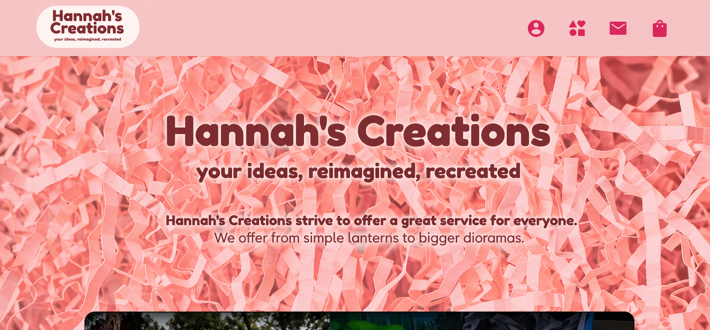

Hannah's Creations
Creative Commerce Platform / Handmade Filipino Works
Hannah's Creations Craft-Led Shopfront
2023 - 2024
Frontend & Backend Developer
Product Storytelling / E-Commerce
Hannah's Creations is a craft-led e-commerce concept for handmade Filipino products, designed to make browsing feel warm, trustworthy, and visually intentional. The project focuses on presenting products with enough story and structure to support both discovery and purchase decisions.
Storefront Direction
A warmer storefront for handmade Filipino products.
The page was shaped around the feeling of a small handmade brand: personal, approachable, and product-focused. Instead of treating the items like a plain catalog, the design gives each product more presence through imagery, spacing, and clear shopping cues.
Category
Creative Commerce
Audience
Gift Buyers / Local Craft Supporters
Stack
Tailwind CSS / JavaScript
Intent
Showcase / Browse / Purchase
Visual Merchandising
Product browsing with a handmade brand feel.
The storefront layout gives the products more room to breathe, helping visitors understand the brand before they move into the shopping flow. The goal was to make the first impression feel crafted, not template-based.

Collection Frame
Visuals that make the products feel giftable and personal.
The supporting imagery leans into a warmer, more editorial direction so the products feel suitable for gifts, celebrations, and personal spaces. This helps the shop communicate value before the user reaches the product details.

Experience Pillars
Three ideas shaped the storefront direction.
Story-led browsing
Browsing is supported by mood, imagery, and short product context so visitors understand the items as handmade pieces, not just entries in a grid.
Integrated shop flow
Product presentation and shopping actions stay close together, making it easier for visitors to move from interest to purchase without losing the brand atmosphere.
Craft-first presentation
Layout, imagery, and spacing are used to highlight texture, care, and handmade quality before the visitor even reads the product details.